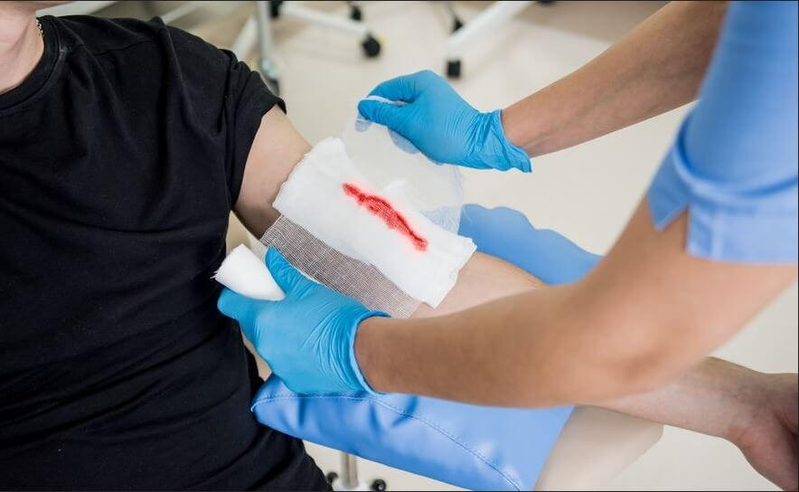

Medicina General a Domicilio
Consulta médica general en casa en Bogotá y Medellín. Evaluación, diagnóstico y tratamiento sin filas ni desplazamientos.
Agenda tu consultaAtención rápida, segura y profesional en casa.
Consulta médica en tu hogar por doctores certificados.
Agenda fácilmente por WhatsApp y recibe atención sin salir de casa.
Servicio de consulta médica a domicilio en Bogotá y Medellín. Contamos con médicos generales, atención urgente y orientación profesional sin filas ni demoras. Solicita tu atención en casa de forma rápida, segura y confiable.
En Medigo en Casa ofrecemos atención médica domiciliaria en Bogotá con calidad, confianza y seguridad. Nuestro equipo realiza consulta médica en casa para adultos, niños y adultos mayores, evaluaciones de salud, control de enfermedades crónicas y cuidados postoperatorios, todo sin que tengas que desplazarte.
Estamos disponibles los 7 días de la semana para que recibas la mejor atención médica en tu hogar, con el respaldo de médicos profesionales y la comodidad que mereces.
Consulta médica general, terapias, diagnósticos y exámenes clínicos sin salir de casa.
Consulta médica general en casa en Bogotá y Medellín. Evaluación, diagnóstico y tratamiento sin filas ni desplazamientos.
Agenda tu consulta
Nebulizaciones, oxigenoterapia y tratamientos respiratorios en tu hogar. Terapia respiratoria a domicilio en Bogotá segura y eficaz.
Solicitar terapia
Servicio de fisioterapia a domicilio en Bogotá para mejorar movilidad, fuerza y recuperación funcional desde tu hogar.
Solicitar fisioterapia
Eliminación segura y profesional de tapones de cera en tu hogar. Servicio de lavado de oídos a domicilio en Bogotá.
Solicitar servicio
Retiro seguro de suturas y puntos quirúrgicos en tu hogar realizado por personal médico especializado.
Solicitar retiro
Atención profesional de heridas, quemaduras y úlceras. Servicio de curaciones a domicilio en Bogotá.
Solicitar curación
Electrocardiograma a domicilio en Bogotá con equipos modernos y resultados inmediatos sin salir de tu hogar.
Solicitar estudio
Diagnóstico por imagen con ecografía en casa en Bogotá. Servicio rápido, confiable y sin desplazamientos.
Solicitar ecografía
Consulta virtual con un médico desde tu hogar en Bogotá. Orientación, seguimiento y atención de urgencias leves.
Solicitar videoconsulta
Toma de muestras y exámenes de laboratorio a domicilio en Bogotá. Resultados rápidos y confiables sin salir de tu hogar.
Solicitar laboratorioProfesionales certificados con amplia experiencia para tu tranquilidad.
Llegamos a tu hogar con todo lo necesario para atenderte sin demoras.
Consulta personalizada con seguimiento y orientación médica continua.
Disponibles en todo momento, incluso fines de semana y festivos.
Servicios de calidad con tarifas justas y al alcance de tu bolsillo.
Un equipo médico altamente capacitado y comprometido con tu salud.